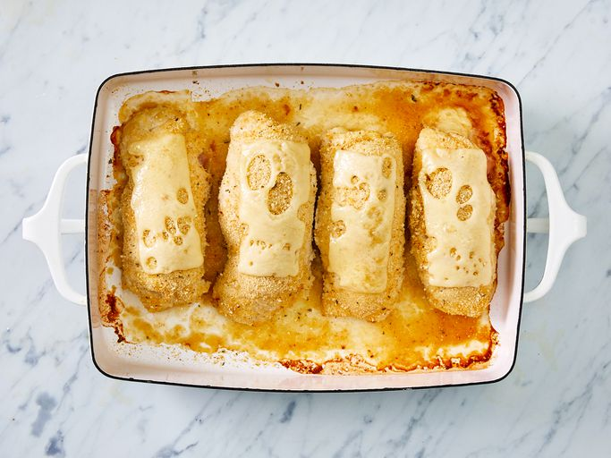

Chicken Cordon Bleu

Description
Don't feel like going out tonight? You can easily make a gourmet restaurant-worthy meal in the comfort of your own kitchen with this top-rated chicken cordon bleu recipe. It's impressive, delicious, and way simpler than you think.
Ingredients
- nonstick cooking spray
- 4 skinless, boneless chicken breast halves
- 1/4 teaspoon salt
- 1/8 teaspoon ground black pepper
- 6 slices Swiss cheese
- 4 slices cooked ham
- 1/2 cup seasoned bread crumbs